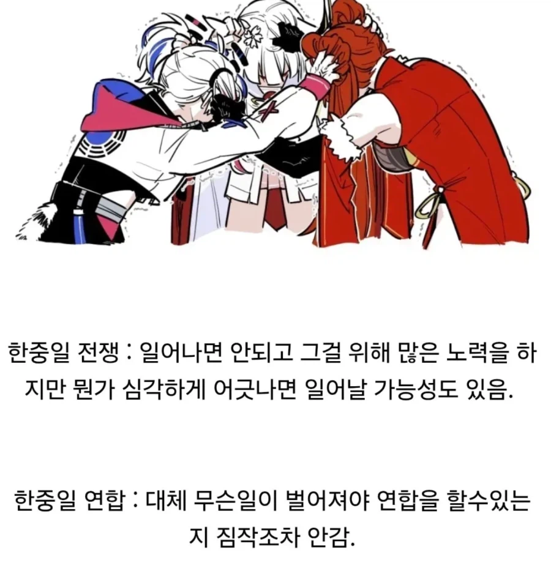

한중일로 묶이지만 우리가 1등이 되는날은 절대 안오겠지?
영프 프독전쟁은 결국 유럽연합 생각하면 즈그들끼리 wwe수준이란거
우리한테 핵주면 가능
지금 댓글들이 열심히 한중일 연합이 안되는이유같은거 설명하는데, 그런것들을 감수할정도의 일로 연합한다는게 진짜 공포라는거잖아ㅋㅋㅋ
안되는 이유만 나오는걸로도 이미 연합이 성공적으로 이루어질때의 이득은 이견이 없다는 거 ㅋㅋㅋㅋ
진지빨자면 중국 체급이 너무 커서 동등한 관계가 어려울거 같음 한일 gdp 합쳐도 중국이 3배 훨씬 넘어가니
그치 땅덩어리좀 쪼개놔야되는데 진시황 ㄱㅅㄲ
외계인 침공으로 미국이 먼저 함락당하지 않는 한 불가능함
스타워즈
한중일 연합은 외계침공때나 가능할듯ㅋㅋ
약간 워해머에서 타이라니드랑 인류제국이 손잡는거랑 비슷
외계인이 침략을
한중일 연합이 될려면 일단 임금이 비슷해져야해서 중국이 4~5만불될때까지 언급도 해선안돼
아니면 일자리 다 뺏김
트럼프 3번 정도 하면 각 한 번 안 뚤라나
인류연합이 아니라 동아시아 삼국 연합이 생기려면
진짜 동서양간 세계대전이 일어나야 각 있는거 아니냐
동중국해에 원인불명의 외계세력이 나타나 대뜸 "한중일 니네는 이제 이 해로를 쓸 수 없다 ㅗㅗ 한중일 행만 아니면 나머지는 ㄱㅊㄱㅊ~"하는게 아닌 이상 연합하기는 무리일듯ㅋㅋ
중국이 ㅈ망해서 갑자기 중국인들이 코리아 넘버원 이러면 가능
중국에 게이트 열려서 괴물 쏟아지는데
서해랑 제주도쪽에 흘러나오기 시작하면
연합함
대신 북한이 무너지면 한국은 북한부터 수습한다고 살짝 빠짐
전쟁터졌는데 동아시아가 타겟이면?
갑자기 유럽 러시아가 미쳐가지고 다 지배하겠다고 달려들면 한중일 연합 하려나 ㅋㅋㅋㅋㅋㅋ
북미와 유럽이 외계문명에 의해 파괴되고 외계군단이 실시간으로 동북아시아로 침공중이라면 연합가능
중국은 본인이 1등시민, 1등국가라는 중화사상때문에 절대 같이 못함.
그리고 사기당한 놈이 잘못이라는 사상이 기저에 있어서...본인한테 약자포지션이면 훨씬 악랄해짐. 그리고 평균 시민의신은 후진국
카오스나 타이라니드 침공 정도면 가능할듯
한중일 연합? 장어따리로 되던데
한중일 연합은
일단 전제가 잘못됨